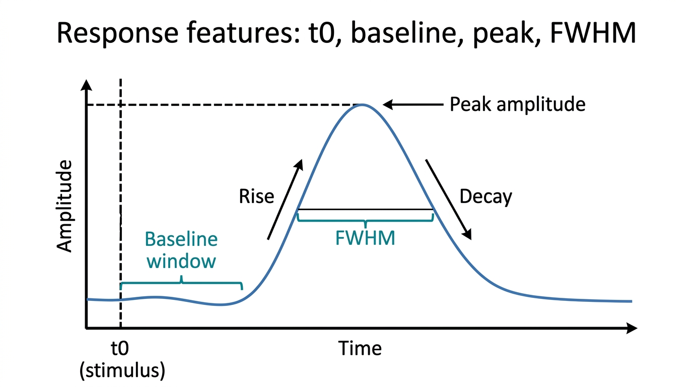

Pipeline
Response features, group statistics and figures
Signal Characterization turns each response into numbers, compares groups of animals with statistical tests and exports publication figures.
Features of a single response
Reference level and direction
- Baseline: the mean of the signal inside the baseline window is the reference for every feature. If the window holds no samples, the pre-onset mean is used; if end ≤ start, the first 0.05 s of the trace. For trials that start before t0 the window is set to the pre-stimulus part when the file is loaded.
- Direction: Positive (peaks), Negative (troughs) or Auto (negative when the post-onset deflection below baseline is larger than above).
Features (measured after t0)
- Peak latency: time from t0 to the peak.
- Onset delay (50%): time from t0 until the response first reaches 50% of the baseline-to-peak amplitude.
- FWHM: width of the part of the response around the peak that stays beyond half of the baseline-to-peak amplitude.
- AUC positive / negative: area above / below the baseline over the whole trace.
- Rise time: 10% → 90% of the baseline-to-peak amplitude, before the peak.
- Decay time: from the peak until the signal returns past 50%.
- Peak amplitude: peak minus baseline.
- Stim–response integral: integral of the signal from t0 to the end.
A feature that cannot be measured (e.g. the signal never returns to 50%) is NaN.

IllustrationData types detected on loading: LDF trials (one series per trial), LFP from Extract Ephys (mean over channels), an ERP export, or any file with t and y. The plot marks t0, the baseline window, the detected peak and the FWHM before you extract, so the settings can be checked.
Groups & statistics
In the Groups & statistics tab, add one .mat file per animal to each group. One value per animal is computed for the chosen feature (recommended: from the file's mean trace), then tested:
| Design | Parametric | Nonparametric (ranks) | Effect size |
|---|---|---|---|
| Paired (same animals, 2 groups) | Paired t-test | Wilcoxon signed-rank[16] | dz; rank-biserial r |
| Unpaired (2 groups) | Welch t-test[14] | Mann–Whitney U[17] | Hedges' g; rank-biserial r |
| ANOVA (2+ independent groups) | One-way ANOVA with Tukey–Kramer comparisons[15] | Kruskal–Wallis[18] | η², ω²; η²H |
| Repeated measures (same animals, 3+ conditions) | Repeated-measures ANOVA with sphericity test[27] and corrections[28][29]; Holm-corrected[30] paired t-tests | Friedman test[31]; Holm-corrected Wilcoxon signed-rank tests | partial and generalized η², dz; Kendall's W |
- Every result lists the test, statistic, df, p, effect size, 95% CI of the difference, n per group, a robustness check with the other test family, the assumptions, and a copy-ready report sentence.
- Paired designs match subject #1 with #1, #2 with #2 (the # column; reorder with Move up / Move down); the report lists every pair.
- The plot shows every animal, pair lines, mean ± SEM or a box plot, and significance brackets.
- Repeated measures: when the same animals are measured in 3 or more conditions, choose Design: Repeated measures. Animal #1 of every group is the same animal, and so on; every group needs the same number of files, and an animal missing a value in any condition is left out of all of them (the assumptions say how many).
- Sphericity: the repeated-measures ANOVA assumes that the differences between every two conditions vary by the same amount. Mauchly's test checks this; when it fails (p < 0.05), the Greenhouse–Geisser corrected p is reported (df with decimals, e.g. F(1.3, 9.1)); all three p-values (uncorrected, Greenhouse–Geisser, Huynh–Feldt) are listed. With few animals Mauchly's test has little power: if the corrected p leads to another conclusion, report the corrected one.
- The Friedman test ranks the conditions within each animal, so it needs neither normality nor sphericity. Kendall's W goes from 0 (no consistent order) to 1 (every animal ranks the conditions the same way).
- With repeated measures the plot draws each animal's line across the conditions. Not available: mixed models (for example missing values kept, or two within-animal factors); use a statistics package for those.
The implementation is checked against published textbook data sets; see Validation.
Figure export
Export figure… saves the selected trace (Single file tab) or the group plot as a publication figure: vector PDF, SVG or EPS, or PNG / TIFF at 300 or 600 dpi; 8.5 cm wide, 8 pt Helvetica, white background. The window itself is not changed. Vector files stay editable in Illustrator or Inkscape. Plot colours across the toolbox use the colour-blind-safe Okabe–Ito palette[20].
Walkthrough
Walkthrough: repeated measures on the group demo
Inputs and outputs
In
- LDF trials from LDF Process:
segmentedLDF,segmentedTime(one series per trial) - LFP from Extract Ephys:
lfp_data,t_lfp(mean over channels = one series) - ERP export from LFP analysis, or any
.matwithtandy(ortandLDF)
Out
- .csv: one row per series, columns Trial_Channel, PeakLatency_s, OnsetDelay_s, FWHM_s, AUCpos, AUCneg, RiseTime_s, DecayTime_s, PeakAmp, Integral
- .mat:
data(the table as a cell array) andcolNames
Demo expectations
The trials file and the group demo are described on the demo data page. Expected results (from the in-app Help):
- Data:
demo_ldf_trials.mat, 8 LDF trials from −5 to 20 s at 10 Hz (0 = stimulus onset). The demo sets t0 = 0, direction Auto, the baseline to −5–0 s and selects every feature. - Expected per trial (true response: ~120 PU baseline + 30 PU gamma-shaped hyperemia): peak latency ≈ 4 s, peak amplitude ≈ 30 PU, onset delay (50%) ≈ 1.9 s, FWHM ≈ 5.5 s, rise time (10–90%) ≈ 2.2 s, decay to 50% ≈ 3.4 s; positive direction.
- Trials differ by a few PU / tenths of a second because of vasomotion and noise, which is why the mean over trials is the number to report.
- Group demo (Try group demo): 24 files,
control_animal01.mat…drug_animal08.mat: the same 8 animals in Control, Stimulated and Drug, each with 8 LDF trials (−5 to 20 s at 10 Hz). True peak hyperemia 18, 30 and 24 PU; animals differ by ~3 PU, plus ~2.5 PU per animal and condition. - Paired t-test, Peak amplitude, Control vs Stimulated: Stimulated − Control ≈ +12 PU (95% CI roughly +9 to +15), p < 0.001, d_z ≈ 3 (simulated 3.3). Wilcoxon signed-rank: p ≈ 0.008 (all 8 animals increase; the smallest exact p possible with 8 pairs). Unpaired (Welch): also significant, with a smaller t.
- ANOVA: F(2, 21) large, p < 0.001; Tukey–Kramer Stimulated − Control ≈ +12 PU (p < 0.001); Drug lies ~6 PU from each of the others (usually, not always, significant). Peak latency ≈ 4 s in every group: no difference expected.
- Repeated measures, Peak amplitude, all three conditions (the same 8 animals, matched by #): repeated-measures ANOVA F(2, 14) large, p < 0.001, partial η² large. Mauchly's test is usually not significant (the demo is simulated with sphericity), so the uncorrected p is reported; Greenhouse–Geisser and Huynh–Feldt p are also < 0.001. Holm-corrected paired t-tests: Stimulated − Control ≈ +12 PU (p < 0.01, d_z ≈ 3), Drug − Control ≈ +6 PU, Drug − Stimulated ≈ −6 PU (usually, not always, significant). Friedman: significant (χ²(2) = 16, p = 0.0003 when every animal ranks the conditions the same way; Kendall's W near 1).
Step-by-step instructions and troubleshooting: Signal Characterization in the guide.